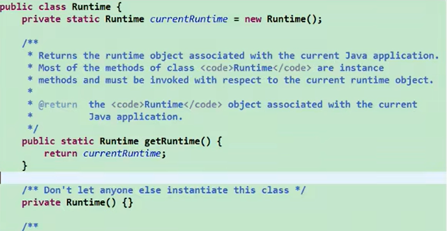

static 關鍵字：有些時候，我們希望「某些特定資料在記憶體中只有一份」，且這份資料是大家
共享的，而不會隨著物件而不同的，例如：存款利率、最低存款金額、工具類
access 靜態變數 實例變數
類別 Yes No
物件 Yes Yes
只會在記憶體中存在一份資料，存在在方法區的靜態域只可以存取靜態變數與靜態方法(早出生不能調晚出生的)；實例方法可以存取靜態結構與實例結構(晚出生能調早出生的)，原因是看在生命週期被創建的時間點單例設計模式：
減少了系統性能開銷，當一個物件的產生需要比較多的資源時，如讀取配置、產生其他依賴物件時，則可以通過在應用程式啟動時直接產生一個單例物件，然後永久駐留記憶體的方式來解決，例如 java.lang.Runtime
// 餓漢式
public class SingletonTest {
public static void main(String[] args) {
Bank bank1 = Bank.getInstance();
Bank bank2 = Bank.getInstance();
// 同一個地址值
System.out.println("bank1 == bank2 : " + (bank1 == bank2));
}
}
class Bank {
// 1. 私有化類別的建構子
private Bank() {
}
// 2. 類別的內部創建類別的私有物件，且宣告為靜態的
private static Bank instance = new Bank();
// 3. 提供公共靜態的方法，回傳類別的物件
public static Bank getInstance() {
return instance;
}
}
// 懶漢式
public class SingletonTest2 {
public static void main(String[] args) {
Order order1 = Order.getInstance();
Order order2 = Order.getInstance();
// 同一個地址值
System.out.println("order1 == order2 : " + (order1 == order2));
}
}
輸出結果：
bank1 == bank2 : true
// 懶漢式
public class SingletonTest2 {
public static void main(String[] args) {
Order order1 = Order.getInstance();
Order order2 = Order.getInstance();
// 同一個地址值
System.out.println("order1 == order2 : " + (order1 == order2));
}
}
class Order {
// 1. 私有化類別的建構子
private Order() {
}
// 2. 類別的內部宣告類別變數，但不初始化
private static Order instance = null;
// 3. 提供公共靜態的方法，回傳類別的物件
// 要調用的時候再new(非線程安全)
public static Order getInstance() {
if (instance == null) {
// 只new一次
instance = new Order();
}
return instance;
}
}
輸出結果：
order1 == order2 : true